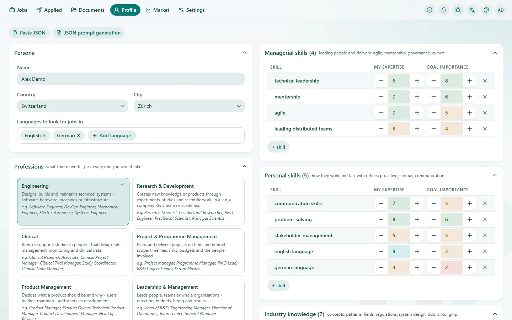

Jobs
One list from every source. When the same vacancy is on the company site and on two boards, it shows up once, with the other places to apply listed under it.
Each posting is read for the skills it asks for. You give every skill two numbers from 0 to 10: My expertise (how much of it you can show) and Goal importance (how much the job you want needs it). That gives every posting two scores, fit and goal, and the card shows their average. A posting that asks for three things you rate 9 beats one that asks for twenty you don't.
Narrow the list by profession, field, skill, country, work type, workload and posting date. Rules drop postings that have a word you name in the title or the description.
No model picks your jobs. The scoring is plain arithmetic, so the same postings and the same profile always give the same list.
